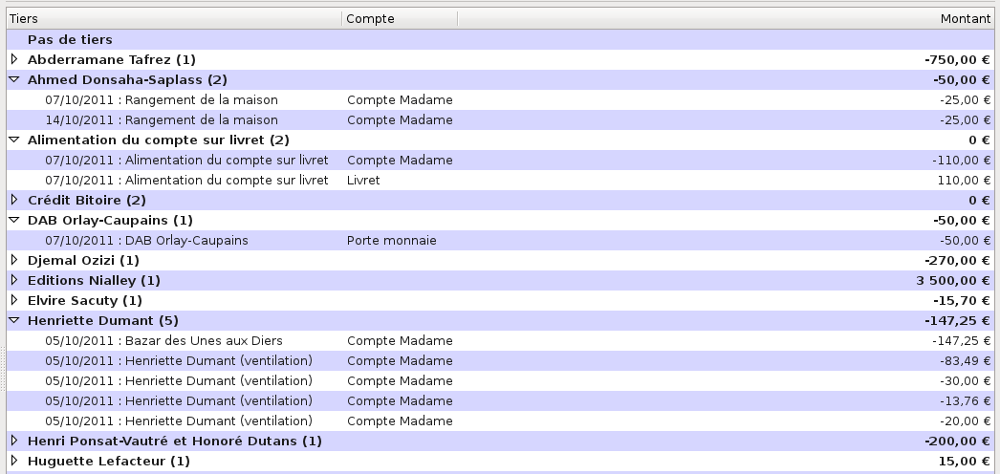

On appelle tiers la personne ou plus généralement l’organisation avec qui on a une relation financière, par exemple un ami, un commerçant ou une administration. Ne pas confondre avec la catégorie, qui définit la nature de cette relation, par exemple «Loisirs » ou «Habillement ». D’une autre manière, qui et quoi…
Bien sûr, si vous changez de fournisseur sans cesse, vous pouvez créer un tiers fournisseur générique (ex : Station-service) mais votre comptabilité sera moins précise.
Outre ces tiers, peuvent aussi exister ceux que l’on pourrait appeler des tiers financiers. En effet, lorsque vous faites un virement de compte à compte, il est intéressant de créer un tiers spécifique pour ce genre d’opération, par exemple Alimentation des comptes d’épargne, ou bien Remise de chèques, ou encore Régularisation d’avances. Ceci vous permettra ultérieurement une analyse plus fine de vos finances.
L’onglet Tiers sert à gérer tous les tiers de votre fichier de comptes.
Pour avoir accès à la gestion des tiers, cliquez sur Tiers dans le panneau de navigation, ou sélectionnez Tiers avec la barre d’information (voir le chapitre 4, Accueil).
La barre d’information affiche, à gauche, le nom du tiers sélectionné dans le pavé des détails et, complètement à droite, le solde des opérations affectées.
Le pavé des détails affiche deux éléments :
La barre d’outils des tiers présente les fonctions suivantes :
La barre d’outils peut être déplacée dans l’écran en cliquant sur sa poignée (petit rectangle vertical à gauche de la barre) et en la déplaçant. Pour la réattacher à son emplacement d’origine dans le pavé des détails, la remettre en haut de la fenêtre, le haut de la poignée placé sur le petit trait qui visualise sa place d’origine.
La liste des tiers s’affiche dans le panneau des détails.

Figure 12.1: Liste des tiers
Elle affiche en haut la barre des libellés des colonnes ; ses champs d’affichage sont les suivants :
Vous pouvez déplacer la liste des tiers vers le haut ou vers le bas avec la molette de la souris, ou bien avec la souris et l’ascenseur vertical. Le déplacement éventuel vers la gauche ou la droite se fait avec la souris et l’ascenseur horizontal.
La liste des tiers affiche tous les tiers de votre fichier de comptes par ordre alphabétique, avec une seule exception : le premier tiers affiché est toujours le tiers de libellé Pas de tiers, qui reçoit toutes les opérations dont le tiers n’est pas défini.
Le nombre d’opérations affectées à chaque tiers s’affiche, entre parenthèses, à la suite de son nom, et le montant total des opérations affectées à ces tiers s’affiche dans la colonne Montant, à droite sur la même ligne.
Note : vous pouvez configurer la devise des totaux de tous les tiers dans le menu Édition - Préférences (voir le paragraphe 22.2.4, Devises des totaux).
Pour sélectionner un tiers, vous avez deux moyens :
Le nom du tiers apparaît alors sur fond rose.
Pour afficher les opérations affectées à un tiers, cliquez sur le petit triangle à gauche de son nom, ou bien double-cliquez sur sa ligne, ce qui déroule la liste. Les opérations sont alors décrites sur une seule ligne, avec leur date, leur remarque éventuelle, le nom du compte concerné et leur montant.
Note : ces triangles peuvent être remplacés, en fonction du thème de l’environnement de bureau ou du gestionnaire de fenêtres que vous utilisez, par d’autres caractères tels que +, -, >, <, etc.
Vous pouvez afficher plusieurs tiers déroulés. Pour ne plus les afficher, enroulez les tiers en cliquant sur le petit triangle à gauche de leur nom, ou bien double-cliquez sur leur ligne. Vous pouvez aussi dérouler ou enrouler tous les tiers de la liste, en cliquant sur l’outil Affichage dans la barre d’outils et en choisissant Vue complète. Pour afficher seulement les tiers, cliquez sur l’outil Affichage dans la barre d’outils et choisissez Vue des tiers uniquement.
Vous pouvez déplacer une opération d’un tiers vers un autre tiers de la liste (sauf vers Pas de tiers), en sélectionnant cette opération et en faisant un glisser-déplacer sur le tiers cible, exactement à l’endroit où son nom est entouré d’une bordure pointillée.
Un double-clic sur une ligne d’opération d’un tiers ferme l’onglet Tiers, ouvre l’onglet Comptes et le sous-onglet du compte contenant cette opération, sélectionne l’opération concernée et l’affiche dans le formulaire de saisie. De cette façon, cette opération peut être modifiée facilement.
La façon la plus immédiate pour créer un tiers est de saisir son nom au cours de la saisie d’une nouvelle opération dans l’onglet des comptes (voir la section 8.17, Nouveau tiers, catégorie ou imputation budgétaire) ; mais vous pouvez aussi créer un tiers ici, en cliquant sur l’outil Nouveau tiers. Une boîte de dialogue s’ouvre ; renseignez le nom du tiers, et éventuellement une description, puis validez : il apparaît dans la liste des tiers, mais c’est encore un tiers inutilisé, puisqu’aucune opération ne lui est encore affectée (voir la section 12.9, Tiers inutilisés).
Note : il n’est pas prévu d’affichage de plus d’informations pour les tiers, par exemple plusieurs champs pour l’adresse, le téléphone, etc. En effet, il nous semble plus intéressant de prévoir dans le futur une liaison avec un gestionnaire de carnet d’adresses de Gnome ou de KDE, ce qui permettra une gestion beaucoup plus poussée des tiers.
Note : dans tous les cas, un tiers, même inutilisé, s’affiche dans la liste déroulante du formulaire de saisie d’opération, ce qui permet de le sélectionner.
Pour modifier un tiers, procédez comme suit :
La gestion des tiers permet de modifier le nom de plusieurs tiers à la fois. La méthode consiste à remplacer une chaîne de caractères par une autre en utilisant le caractère générique «% », qui remplace tout autre caractère.
Pour gérer les tiers, cliquez sur l’outil Gérer les tiers dans la barre d’outils. L’assistant de gestion des tiers s’ouvre, qui comprend quatre étapes ; suivez les instructions données à chaque étape :
Pour supprimer un tiers, procédez comme suit :
Attention : la suppression d’un tiers est irréversible !
Note : si le tiers que vous voulez supprimer ne contient aucune opération, aucune boîte de dialogue ne s’ouvrira et Grisbi le supprimera immédiatement.
Un tiers inutilisé est un tiers auquel n’est affectée aucune opération. C’est le cas d’un nouveau tiers quand vous venez juste de le créer avec l’outil Nouveau tiers, soit d’un ancien tiers dont toutes les opérations ont été supprimées ou réaffectées vers d’autres tiers.
Note : si vous fermez et réouvrez Grisbi après la création d’un nouveau tiers, il ne sera plus affiché dans la liste des tiers, car il ne contient pas encore d’opération : cela évite l’affichage des tiers inutilisés, qui allonge la liste des tiers souvent très longue ; mais ce tiers apparaîtra dans la liste dès qu’une opération lui aura été affectée.
Pour afficher les tiers inutilisés, sélectionnez Afficher les tiers inutilisés dans l’outil Affichage, qui affiche aussi le nombre de ces tiers.
Note : dans tous les cas, un tiers, même inutilisé, s’affiche dans la liste déroulante du formulaire de saisie d’opération, ce qui permet de le sélectionner.
Pour supprimer tous les tiers inutilisés, cliquez sur l’outil Supprimer les tiers inutilisés dans la barre d’outils. Une boîte de dialogue s’ouvre et vous demande la confirmation de cette action. Si vous la validez, une autre boîte affiche le nombre de tiers supprimés.
Attention : la suppression des tiers inutilisés est irréversible !
Grisbi vous permet d’utiliser des tiers virtuels : un tiers virtuel est un état qui représente une liste de plusieurs tiers.
Lorsque vous saisissez une opération avec pour tiers un tiers virtuel, Grisbi enregistre, au moment de sa validation, une opération identique (montant, catégorie, imputation budgétaire, moyen de paiement etc.) pour chacun des tiers représentés par ce tiers virtuel. Par exemple, vous pouvez saisir en une seule fois un appel à cotisation pour 200 adhérents d’une association, ce qui représente un gain de temps très appréciable …
Pour créer un tiers virtuel, créez un état contenant une liste de tiers : voir le paragraphe 21.4.1, Tiers virtuel.
Note : comme un tiers virtuel est un état, il ne s’affiche pas dans la liste des tiers, mais dans celle des états, et il est géré de la même manière que les autres états.
Pour modifier un tiers virtuel, modifiez l’état qui l’a créé : voir la section 20.6, Modification d’un état.
Pour supprimer un tiers virtuel, vous avez deux possibilités :
La saisie d’une opération avec un tiers virtuel est décrite dans la section 8.7, Saisie d’opérations avec tiers virtuel.